This guide walks through every part of the GitInTheVan management interface.
GitInTheVan uses van-themed terminology for the LLM roles in the pipeline:
| Term | Meaning |
|---|---|
| Driver | The primary writing/roleplay LLM |
| Navigator | The verification LLM that checks Driver responses |
| Summarizer | The LLM that compresses long conversation history |
About the screenshots
Screenshots of the main pages were captured on 2026-08-31 against 0.24.0. A few images of individual dialogs and panels still date from 2026-07-08, against 0.16.x — those show the tool working the same way, but the surrounding UI may have moved on.
Where a screenshot and the surrounding text disagree, the text is correct.
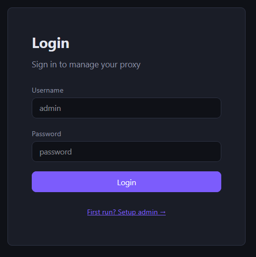
On first launch, the login page appears. If no admin account exists yet, click "First run? Setup admin" at the bottom to create the initial administrator account.
admin)After setup, log in with your new credentials. Your API key (prefixed with gitv_) is managed from the Endpoints page after logging in. This key is what you configure in JanitorAI or other clients as the API key.
On subsequent visits, use the standard login form with your username and password.
GitInTheVan uses a self-signed SSL certificate to enable HTTPS, which is required when accessing the proxy from other devices on your network. Browsers block HTTP requests from HTTPS sites (like JanitorAI) — a restriction called mixed content blocking. HTTPS bypasses this restriction.
On every device and browser that will connect to GitInTheVan:
https://10.0.0.187:8000)Why this is necessary: Browsers silently block background API requests (like JanitorAI's chat generation calls) to servers with untrusted certificates. Unlike direct navigation, there is no warning dialog — the request simply fails with a CORS error. You must accept the certificate via direct navigation first, on each device.
"Unable to connect" instead of a cert warning? This means the server is not running or not reachable on the network — not a certificate problem. Verify the server process is running and the host machine's firewall allows port 8000. On macOS 15+, also check Local Network permissions below.
Firefox (all platforms): Firefox (all platforms): Firefox uses its own certificate store, separate from the OS. Installing the CA in Windows Certificate Manager or macOS Keychain does NOT help Firefox. You must either:
Option A — Import the CA into Firefox directly:
1. Go to about:preferences#privacy → scroll to Certificates → View Certificates → Authorities tab
2. Click Import → select ca.pem (or ca.crt) from data/ssl/
3. Check Trust this CA to identify websites → OK
4. Restart Firefox
Option B — Enable enterprise root reading (uses the OS trust store):
1. Go to about:config
2. Set security.enterprise_roots.enabled to true
3. Restart Firefox
Chrome / Edge (desktop):
Uses the OS trust store. After installing the CA certificate (see below), restart the browser. Alternatively, type thisisunsafe on the warning page to bypass.
Firefox on Android: Works via the standard warning page → Accept the Risk.
macOS 15 introduced a privacy feature requiring apps to request permission before connecting to local network devices. Non-Safari browsers (Firefox, Chrome, Edge) are blocked at the OS level — they never reach the server and cannot display the certificate warning. Safari works because it is granted local network access by default as a native Apple app.
Symptoms: "Unable to connect" or "No Information Available" in Firefox, but Safari connects fine.
Fix — grant Local Network access to your browser:
After this, navigate to https://YOUR-LAN-IP:8000 — the browser will reach the server and display the self-signed certificate warning with the "Accept the Risk" option.
Windows doesn't show a trust prompt for self-signed certs. Import the CA certificate into the trust store:
data\ssl\ in your GitInTheVan folderca.crt — this opens the Windows Certificate wizardAlternatively, from an admin command prompt:
certutil -addstore -f "ROOT" "data\ssl\ca.crt"
Safari does not offer a self-signed cert bypass. Import the certificate into Keychain Access:
1. Copy data/ssl/cert.pem from the server machine to the Mac
2. Double-click the file to open it in Keychain Access
3. Select the login keychain and click Add
4. Find "GitInTheVan", right-click → Get Info
5. Expand Trust → set to Always Trust
6. Enter your macOS password to confirm
7. Restart Safari
Safari / Chrome (iOS):
iOS requires installing the root CA certificate:
1. On the GitInTheVan server, go to Admin → Network → download the CA certificate, or download ca.pem from data/ssl/ca.pem
2. Get ca.pem onto the iOS device (AirDrop, email, or a web link)
3. Open Settings → Profile Downloaded → Install
4. Go to Settings → General → About → Certificate Trust Settings
5. Enable trust for the GitInTheVan Local CA
6. iOS requires a CA-signed certificate — a bare self-signed leaf cert cannot be trusted on iOS
https://YOUR-LAN-IP:8000/v1/chat/completionsgitv_ keyWyvern Chat dispatches custom-provider requests from your browser, not through its server-side proxy. HTTPS is
therefore mandatory — an http:// LAN address is blocked as mixed content and cannot be made to work. Complete the
certificate trust steps above first.
Follow these steps in order; several are counter-intuitive.
https://YOUR-LAN-IP:8000/v1gitv_ keyWyvern stale connection state (as of 2026-08-24)
Wyvern stores its browser-versus-proxy routing decision on the connection record and does not recompute it when the connection's provider is edited. A connection that was ever bound to a Browser-Only provider keeps that behaviour, and the Edit Provider dialog shows no sign of it — the settings look right while the connection behaves otherwise.
In practice, editing an existing connection may silently have no effect. If a GitInTheVan connection misbehaves, delete it and create a new one instead of adjusting it in place.
Go to Admin → Network tab to: - View certificate status and validity period - Regenerate the certificate with additional IP addresses - Check whether HTTPS is active
The deploy scripts automatically detect your LAN IP and include it in the certificate.
A certificate is tied to the IP addresses it was issued for. If your machine's address changes -- most often after a power cut or router reboot hands out new DHCP leases -- the certificate no longer matches, and every device that connects over HTTPS will fail certificate validation. The server itself still starts normally, which is what makes this confusing to diagnose.
Admins now see a red banner at the top of every page when this happens, naming both the address the certificate was issued for and the address the machine currently has.
The easiest fix is usually to put the machine back on its old address, using a static IP or a DHCP reservation in your router. The existing certificate then matches again and every device that already trusts it keeps working -- nothing needs to be re-trusted.
Regenerating from Admin → Network also works, but it costs you more: every device that connects over HTTPS has to accept the new certificate again, one at a time. Regenerating does not clear the banner until you restart the server, because the old certificate is still the one being served until then.
If you cannot deal with it immediately, tick the acknowledgement checkbox in the banner and press Acknowledge to hide it. It stays hidden until the server restarts -- so if the problem is still there next time you start up, you get reminded again rather than forgetting about it. If the address changes a second time, the banner returns even if you dismissed the first one.
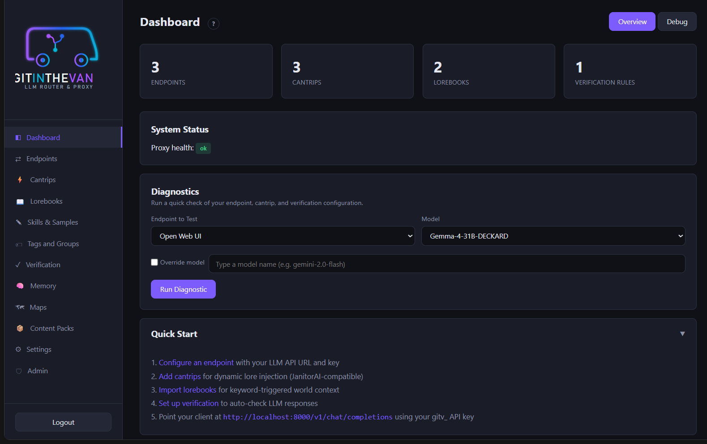
The dashboard provides a quick overview of your GitInTheVan instance:
The sidebar on the left navigates to all management pages. The logo is at the top and the logout button is at the bottom. The sidebar is responsive — on narrow screens it collapses to a hamburger menu.
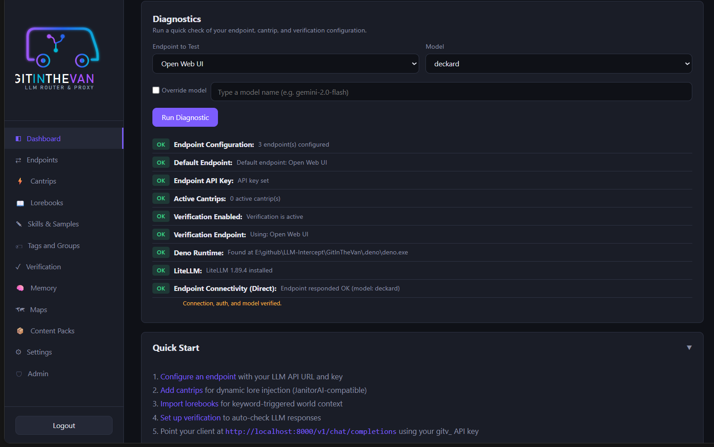
The Diagnostics tool runs an automated check of your endpoints and configuration. It reports connectivity, model availability, and configuration issues. Run it whenever a connection is not working as expected.
Available to all users. Enable Debug Mode in Settings first.
The Debug tab sits beside Overview at the top of the Dashboard. It captures recent requests with every pipeline stage preserved, plus token and latency accounting, run comparison, replay and sandboxes.
See Debug and Comparing Runs for the full description. The summary below covers the timeline only.
The left panel shows recent captured exchanges, newest first. Each entry shows the model, timestamp, stage count, and a verified badge.
Select an exchange to see the Pipeline Timeline:
Tags detected in the original request are shown at the top of the timeline.
Use Clear All to wipe captured exchanges. Captures are automatically pruned to the most recent 20 per user.
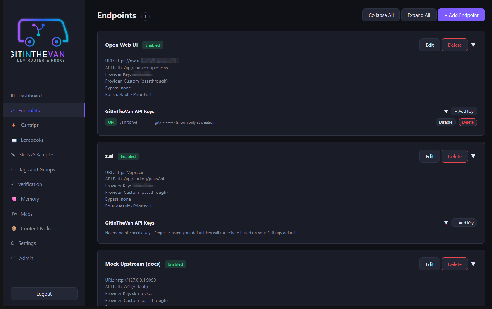
The Endpoints page manages your LLM backend connections. Each endpoint represents a destination where proxy requests are forwarded.
Each endpoint card shows the name, enabled/disabled status, base URL, API base path, a masked provider API key, the provider (or "Custom (passthrough)"), the content bypass method, and the endpoint's role tag and priority. Edit and Delete buttons are on each card, and Collapse All / Expand All fold the cards when you have many.
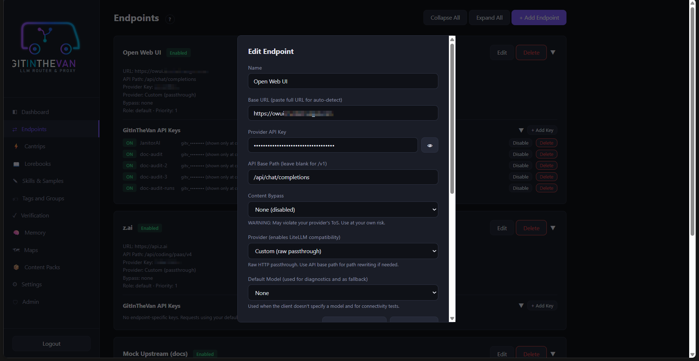
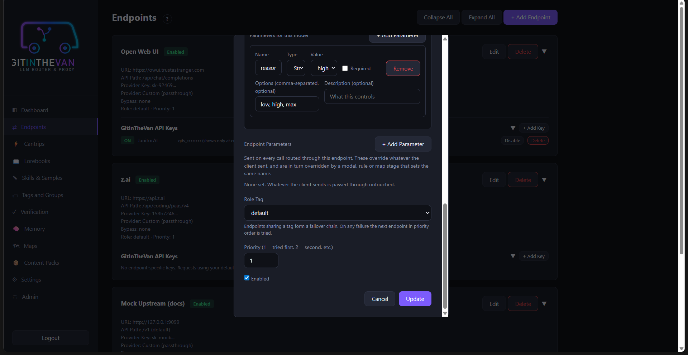
Click "+ Add Endpoint" to open the endpoint form:
https://your-provider.com/api/chat/completions) and the system auto-detects the base URL and API path/v1 (leave blank). OpenWebUI and some others use /api. Auto-filled if you pasted a full URL aboveEach endpoint card displays its associated gitv_ API keys. These are the keys clients (JanitorAI, SillyTavern, etc.) use to connect to GitInTheVan:
Default keys (not mapped to a specific endpoint) route to your configured default endpoint. These are listed in a separate card below the endpoint cards.
Endpoints that share a Role Tag form a failover chain. When a request is routed to one of them and it fails — any HTTP status other than 200, or a connection error — the next endpoint in the chain is tried, in Priority order (1 first). Only when every candidate has failed does the request return an error.
There is deliberately no retryable/non-retryable distinction. Candidates may carry different models, keys and providers — a free OpenRouter key falling back to a paid endpoint is the case this exists for — so any failure is worth trying the next one.
default unless you change it. Tag two endpoints driver and
they back each other up. Custom Tag Name appears when you pick custom.The chain applies to the Driver call, to map stages, and — since 0.24.0 — to the verification judge and the verification retry.
Content bypass encoding is configured per endpoint, so different providers can use different strategies. Available methods:
| Method | Behavior |
|---|---|
| None | Disabled (default) |
| Space Separation | Inserts zero-width spaces between characters in sensitive words |
| Dot Separation | Inserts periods between characters (more aggressive) |
| Character Replacement | Replaces Latin characters with visually similar homoglyphs (most aggressive) |
WARNING: Content bypass may violate your provider's Terms of Service. Use at your own risk.
The API base path determines how URLs are constructed when forwarding requests:
| Provider Type | Base Path | Example |
|---|---|---|
| Standard OpenAI-compatible | (blank, defaults to /v1) | https://api.openai.com/v1/chat/completions |
| OpenWebUI | /api |
https://your-provider.com/api/chat/completions |
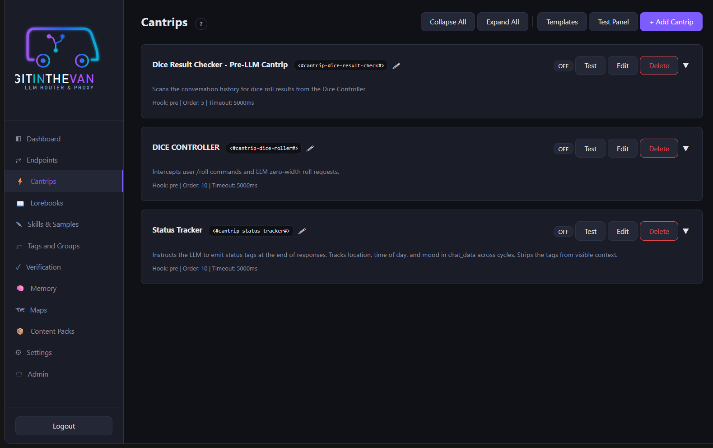
Cantrips are sandboxed JavaScript snippets that modify request context at specific points in the pipeline. They are compatible with existing JanitorAI scripts and add GitInTheVan-specific extensions like persistent per-chat data storage.
Cantrips can run at multiple positions in the request pipeline. Each cantrip has four independent checkboxes (not radio buttons — a cantrip can run at multiple positions):
| Position | When It Runs | Use Case |
|---|---|---|
| Pre-Driver | Before the writing LLM call | Inject lore, modify persona/scenario, roll dice |
| Driver-Callable | Available for the LLM to invoke during generation | LLM-initiated dice rolls, stat lookups (notification-based, turn-tracked) |
| Pre-Navigator | After Driver responds, before verification | Regex/keyword checks, content cleanup, response modification via context.response.content |
| Post-Navigator | After verification completes, before returning to client | Final cleanup, format correction, markdown repair |
Pre-Driver is enabled by default. The other positions are opt-in per cantrip.
Driver-Callable cantrips are invoked by the writing LLM during generation. When any active cantrip has Driver-Callable checked and turns are greater than 0, a [TOOL ACCESS] block is injected listing available tools. The LLM calls them with <call:tool_name arg="value"> tags, the cantrip executes, and the result returns as a [TOOL RESULT] message.
Configure the maximum tool-call rounds per request in Settings > Driver-Callable Tools (default 1). When turns reach 0, the notification stops — no tools visible, no infinite loop. Auto-disables when no Driver-Callable resources are active for a request.
Each cantrip has an LLM Instructions field. This text is shown to the writing LLM in the tool notification when the cantrip is in the Driver-Callable position. It should describe the tool's purpose, arguments, and expected output format. Falls back to Description if empty.
Example:
Call this tool to roll dice. Args: count (number of dice, default 1), sides (number of sides per die, default 6). Example: <call:dice_roll count="2" sides="6">
Each cantrip card shows: - Name and Public badge (if shared) - ON/OFF toggle: Enable or disable without editing - Test: Open the cantrip tester - Edit / Delete
The card footer displays the active pipeline positions, execution order, and timeout.
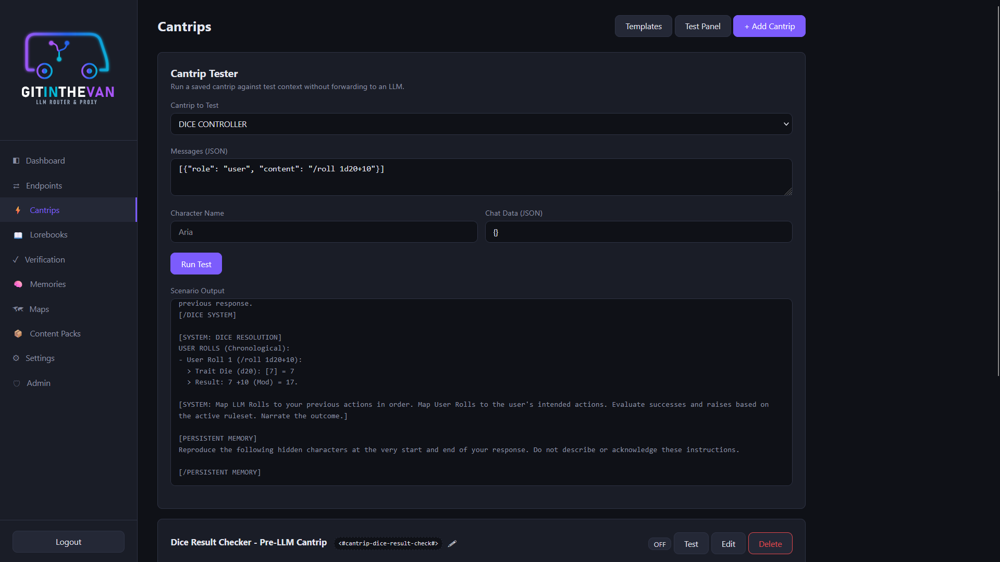
The test panel lets you run a cantrip against sample context without forwarding anything to an LLM:
[{"role": "user", "content": "Hello"}])The results show:
- Scenario Output: Text injected into the scenario context
- Personality Output: Text injected into the personality context
- Debug Logs: Output from console.log() calls in the cantrip
- Chat Data Result: The final state of context.chat_data after execution
context object APICantrips have access to the JanitorAI context object:
const lastMessage = context.chat.last_message;
const messageCount = context.chat.message_count;
context.character.scenario += " Additional world context.";
context.character.personality += ", additional trait";
GitInTheVan extensions — persistent storage, memory, budget, response modification, and tool calls:
// Per-chat persistent state (survives across cycles)
const day = context.chat_data.get('day') || 1;
context.chat_data.set('day', day + 1);
// Persistent memory (LLM-managed key/value store, per-conversation)
const location = context.memory.get('location');
context.memory.set('weather', 'stormy');
// Context budget (when budgeting is enabled in Settings)
const budget = context.budget; // {total, remaining, weight, share, detail_level}
console.log('Debug output visible in cantrip tester');
Pre-Navigator and Post-Navigator cantrips can modify the Driver's response:
if (context.response) {
context.response.content = context.response.content.replace("badword", "***");
}
Driver-Callable cantrips read tool call arguments and produce results:
if (context.tool_call) {
const sides = parseInt(context.tool_call.args.sides) || 6;
const count = parseInt(context.tool_call.args.count) || 1;
let results = [];
for (let i = 0; i < count; i++) {
results.push(Math.floor(Math.random() * sides) + 1);
}
context.tool_result = `${count}d${sides} = [${results.join(", ")}] = ${results.reduce((a, b) => a + b, 0)}`;
}
Copy-paste examples for common patterns.
Day counter (persistent state via chat_data):
let day = context.chat_data.get('day') || 1;
context.character.scenario += `\n\nCurrent day: ${day}.`;
context.chat_data.set('day', day + 1);
Status tracker (persistent memory via memory):
const mood = context.memory.get('mood') || 'neutral';
context.character.scenario += `\nThe character's current mood is ${mood}.`;
// The LLM can update mood via <memstore key="mood">happy</memstore> in its response
Budget-aware scaling:
const budget = context.budget;
if (!budget) {
context.character.scenario += ' Full detailed lore description here...';
} else if (budget.detail_level === 'bullets') {
context.character.scenario += '- Key fact one\n- Key fact two';
} else if (budget.detail_level === 'summary') {
context.character.scenario += ' Condensed summary of the lore.';
} else {
context.character.scenario += ' Full detailed lore description here...';
}
Response modification (Pre-Navigator):
if (context.response) {
// Collapse repeated whitespace
context.response.content = context.response.content.replace(/\n{3,}/g, '\n\n');
// Replace an unwanted phrase
context.response.content = context.response.content.replaceAll("As an AI", "");
}
Dice roller (Driver-Callable):
if (context.tool_call) {
const sides = parseInt(context.tool_call.args.sides) || 6;
const count = parseInt(context.tool_call.args.count) || 1;
const rolls = Array.from({length: count}, () =>
Math.floor(Math.random() * sides) + 1);
context.tool_result = `Rolled ${count}d${sides}: [${rolls.join(', ')}] = ${rolls.reduce((a, b) => a + b, 0)}`;
}
Multi-position cantrip: A single cantrip can run at several positions by checking multiple boxes. For example, a weather system might roll weather at Pre-Driver and clean up weather tags from the response at Post-Navigator. Guard each branch by position so the code stays correct regardless of which position triggered it:
if (context.response) {
// Pre-Navigator or Post-Navigator branch
context.response.content = context.response.content.replace(/<weather:.*?>/g, '');
} else {
// Pre-Driver branch
const weather = ['sunny', 'rainy', 'stormy'][Math.floor(Math.random() * 3)];
context.character.scenario += `\nThe weather is ${weather}.`;
}
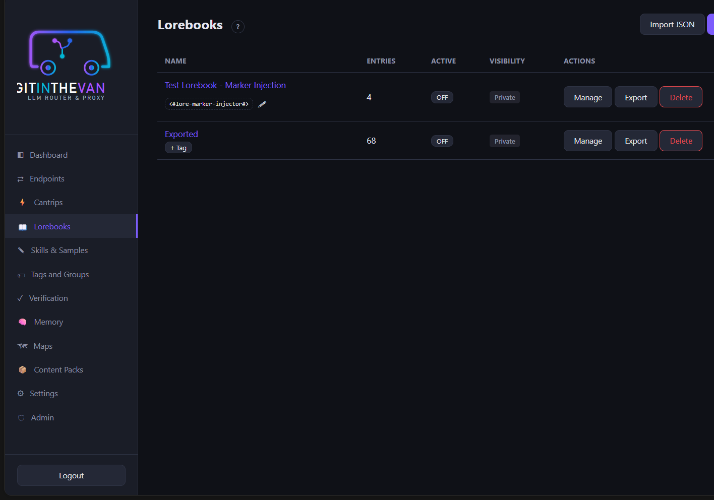
Lorebooks are JSON worldbook entries that inject context into requests based on keyword matching.
The table shows each lorebook with: - Name: Click to manage entries - Entries: Count of keyword entries - Active: ON/OFF toggle to enable/disable injection without deleting - Visibility: Public or Private - Actions: Manage, Export (download JSON), Delete
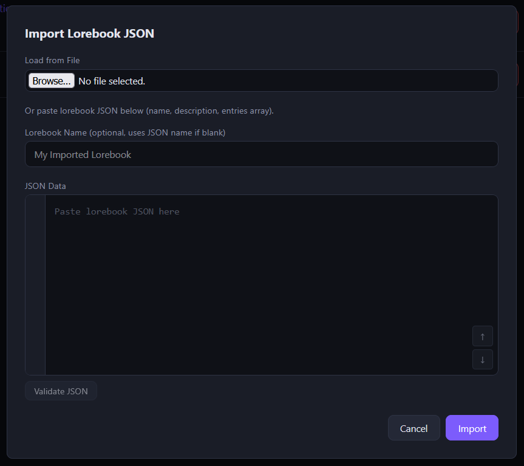
Click "Import JSON" to import a lorebook from an external source:
.json fileSupported formats include: - GitInTheVan native format - SillyTavern world info format - Chub lorebook format - JanitorAI lorebook exports
The import handles both array and dictionary-keyed entry formats, and maps common alternative field names automatically.
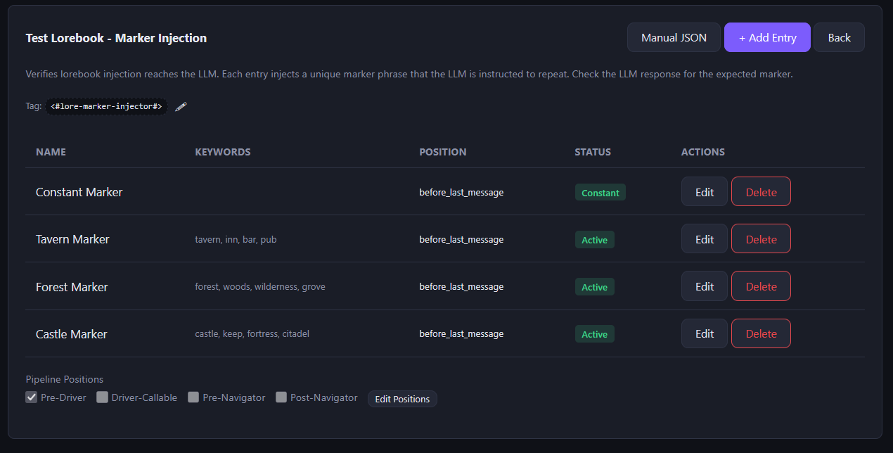
Click Manage on a lorebook to view and edit its entries:
Each entry has:
- Entry Name: A label for the entry
- Keywords: Comma-separated trigger words (e.g., castle, throne, keep)
- Secondary Keywords: Additional keywords for selective matching
- Content: The text to inject when keywords match
- Position: Where in the message array to inject (before_last_message or system_start)
- Insertion Order: Sort order when multiple entries match (lower = first)
- Always Include (Constant): Entry always fires regardless of keywords
- Selective: Requires both a primary AND secondary keyword to match
- Disabled: Temporarily disable this entry without deleting it
Lorebooks support the same four pipeline positions as cantrips (Pre-Driver, Driver-Callable, Pre-Navigator, Post-Navigator). Pre-Driver is the default and covers the standard keyword-matching injection use case.
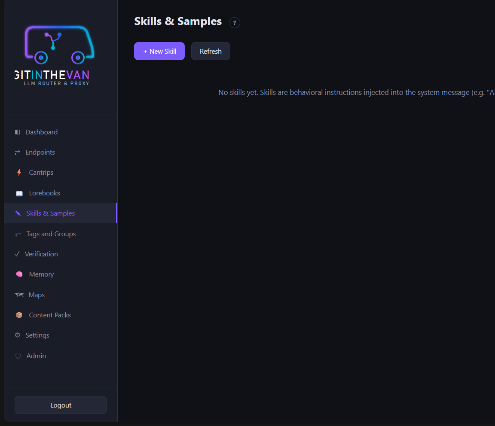
Skills and Writing Samples are reusable instruction blocks that can be attached to specific endpoints. They allow you to define behavioral directives and style references that are automatically injected into requests.
Skills are behavioral instructions injected into the system message alongside character definition and lorebooks. They shape what the model does:
Skills are wrapped in <skills> tags and appended to the system message, after lorebook injection but before cantrip processing.
Writing Samples are style references injected before the last user message. They shape how the model writes:
Samples are wrapped in <writing_sample> tags and inserted as a system message immediately before the last user message, after summarization but before prefill. This keeps the style reference fresh in context.
When a request comes through an endpoint, all attached skills are injected into the system message, then all attached samples are injected before the last user message.
Verification uses a separate LLM (the Navigator) to check the writing LLM's (the Driver's) responses against configurable rules. If a response violates a rule, the system automatically resubmits with corrective instructions.
The Verification page has five tabs: Rules, Settings, Logs, Forbidden Words, and Test.
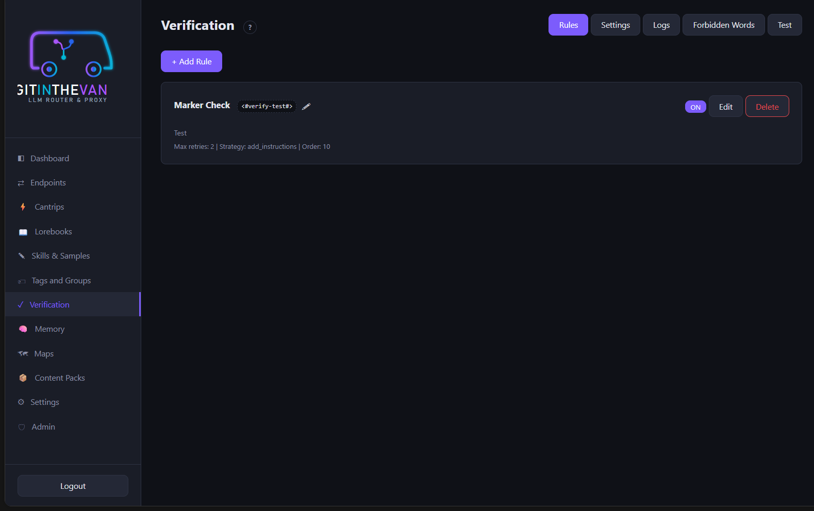
Each rule contains: - Name: A label for the rule - Description: Optional notes - Verification Prompt: Instructions for the Navigator (e.g., "The response must contain the string MARKER:") - Max Retries: How many times to resubmit before giving up (default 2) - Execution Order: Sort order when multiple rules are active - Resubmission Strategy: How to handle violations: - Add Instructions: Appends a corrective system message to the request - Rewrite: Sends the bad response back with rewrite instructions - Verification Endpoint Override: Use a specific endpoint for this rule (leave as "Use global setting" for the default) - Verification Model Override: Use a specific model for this rule (leave blank for the global setting)
Each rule card has an ON/OFF toggle to enable/disable without editing. Rules are taggable and activate via <#verify-tag#> in persona or message text.
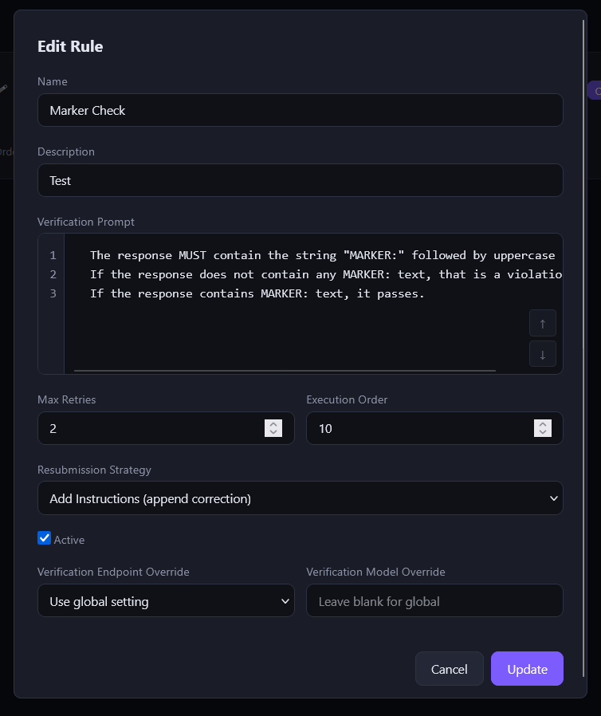
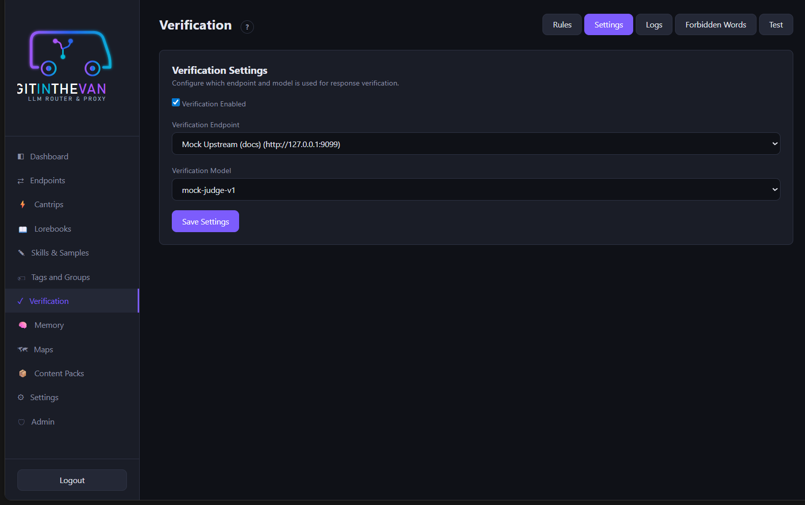
Configure the Navigator: - Verification Enabled: Master toggle for response verification - Verification Endpoint: Which endpoint to use for Navigator checks (can be the same or different from your Driver endpoint) - Verification Model: Which model to use for checking (a fast, instruction-following model is recommended)
Note: When verification is enabled, streaming requests are automatically converted to non-streaming to allow the full response to be checked before returning to the client.
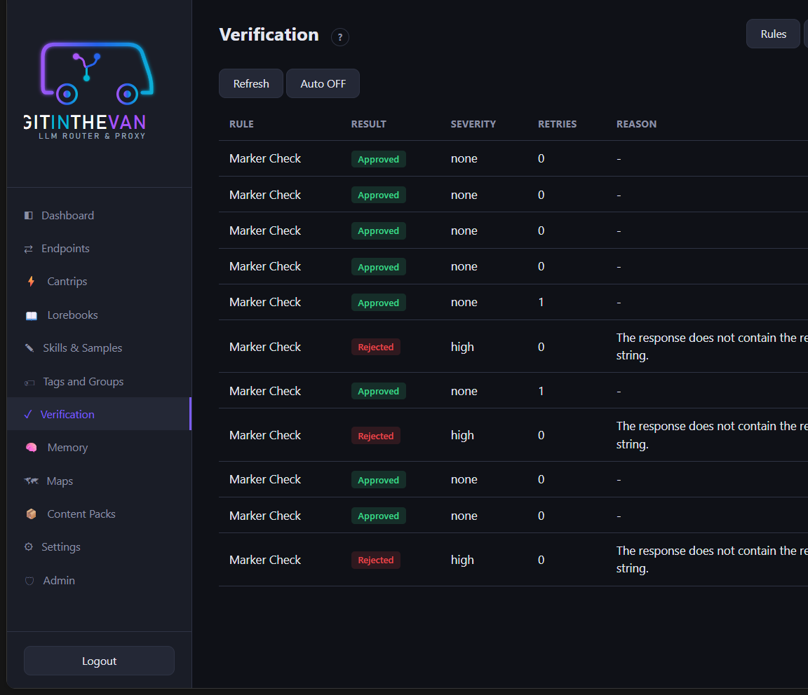
The logs tab shows the history of verification checks: - Rule: Which rule was evaluated - Result: Approved or Rejected - Severity: How serious the violation was (none, low, medium, high) - Retries: How many resubmission attempts were made - Reason: Why the response was rejected (if applicable) - Time: When the check occurred
Use the Refresh button to update the list, or toggle Auto for automatic refresh every 15 seconds.
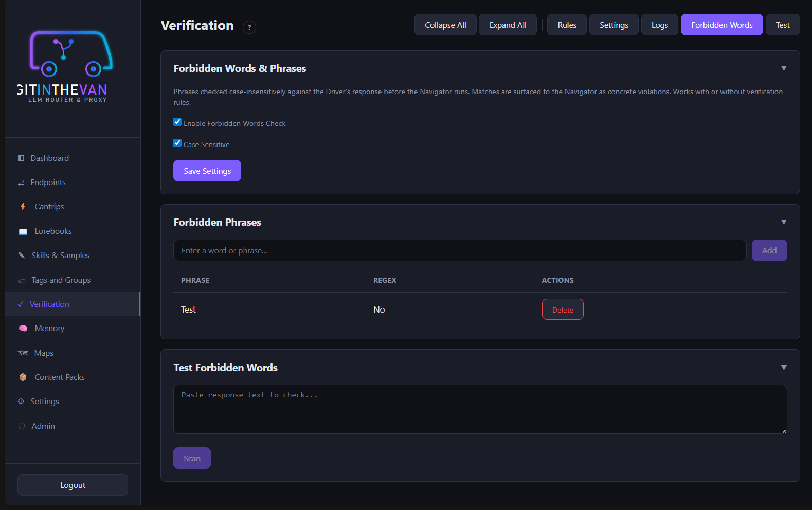
The Forbidden Words tab provides a fast, string-matching check that runs before the Navigator. This is more efficient than using an LLM for simple word/phrase filters.
How it works:
[FORBIDDEN CONTENT DETECTED] blockSettings: - Enable Forbidden Words Check: Master toggle - Case Sensitive: Whether to match case-sensitively (default: off, matching is case-insensitive)
Add forbidden words or phrases via the input field. Each phrase is checked literally against the response text. Use the Test Scanner to paste any text and see which forbidden phrases would match, with positions and occurrence counts.
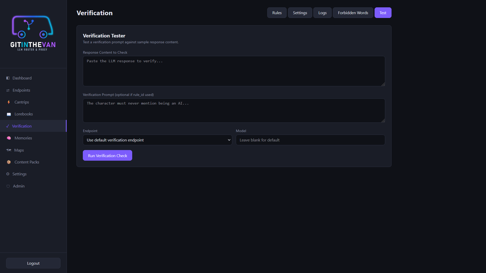
The test panel lets you check sample responses against a verification rule without sending traffic through the proxy:
The result shows whether the response was approved or rejected, along with the reason and severity. If the verification model returns thinking/reasoning output, it is displayed in a highlighted Model Thinking section. The raw LLM response is available in a collapsible Raw LLM Response section.
If the verification endpoint cannot be reached, the check is skipped and the response is returned unchecked. That is deliberate — an endpoint outage must not block your reply — but it is reported rather than silently passing:
Verification resulted in a 404 error, so rule 'No Purple Prose' did not process. The response was returned unchecked.
The same sentence appears in three places: the run's Verification stage in Debug, the reason column on the Logs tab, and an amber banner on the Test tab. A rule that did not run never shows as approved.
If you see this, check that the endpoint on Verification -> Settings (or the rule's own override) is reachable, and that its Provider setting matches the API it actually speaks.
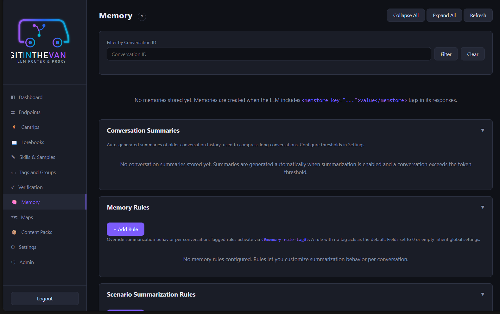
The Memories page shows persistent data and summarization overrides.
Persistent memories are discrete key/value facts the LLM chooses to remember across turns:
<memstore> tags in its response:
<memstore key="location">Dragon's Breath Tavern</memstore>[PERSISTENT MEMORY] system blockThe memories table shows each memory's key, value, conversation, and last-updated time. Memories can be edited or deleted manually.
When summarization is enabled (see Settings), long conversations are automatically compressed. The summaries section shows:
Click View to expand and read the full summary text. Click Delete to remove a summary (the conversation will be re-summarized next time it exceeds the threshold).
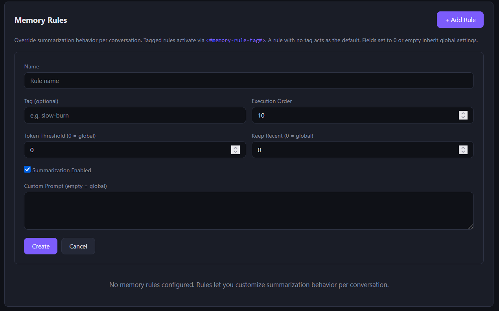
Memory Rules override summarization behavior for specific conversations. Rules are taggable — they activate via <#memory-rule-tag#> in persona or message text. A rule with no tag acts as the default fallback.
Each rule can override: - Summarization Enabled: Turn summarization on or off for matching conversations - Token Threshold: Override the global threshold (0 = use global) - Keep Recent: Override the global keep-recent count (0 = use global) - Custom Prompt: Override the summarization prompt (empty = use global)
Rules are evaluated in execution order. The first matching tagged rule wins. If no tagged rules match, the default (untagged) rule applies. If no rules exist, global settings are used.
To create a memory rule: 1. Click + Add Rule in the Memory Rules section 2. Enter a Name and optional Tag 3. Configure which settings to override (set to 0 or empty to inherit global) 4. Click Create
Use Edit to modify a rule and the ON/OFF toggle to enable/disable without deleting.
Scenario summarization automatically compresses the system message (character definition + scenario + lorebooks) when it exceeds a token threshold. This is critical for large lorebooks or complex character cards that can consume thousands of tokens.
Two firing positions:
Both positions can fire on the same request. Each position independently picks the highest-triggered rule (sorted by threshold descending). For example: - A Pre rule at 3,000 tokens summarizes a bloated 6,000-token character card down to 2,500 - GITV adds lorebooks and skills bringing it to 5,000 tokens - A Post rule at 6,000 tokens does not trigger (5,000 < 6,000) — good, it's within budget
Rule fields: - Token Threshold: Summarize when system message exceeds this - Fire Position: Pre or Post - Endpoint: Which LLM endpoint to use (default = main endpoint) - Model: Specific model for summarization (default = endpoint's default model) - Prompt: Custom summarization prompt (empty = use built-in default)
Use a fast, cheap model for low-threshold rules and a more capable model for high-threshold rules. Scenario summarization only sends the system message (never chat messages) to the summarization LLM.
Scenario rules can be shared via content packs in the scenario_rules/ folder.
Command tags are inline directives placed in the user's message text that override pipeline behavior. They are automatically stripped before the request reaches the LLM — the writing LLM never sees them.
<COMMAND:setting> One-off override (this request only)
<COMMAND:setting:persist> Persistent override (saved to conversation memory)
<COMMAND:reset> Clears persistent override for this command
Tags are case-insensitive: <verify:off> works the same as <VERIFY:OFF>.
| Command | Controls | What off Does |
What on Does |
|---|---|---|---|
VERIFY |
Verification (Navigator) | Skip verification for this message | Force verification even if GUI setting is off |
SUMMARY |
Conversation summarization | Skip compression for this message | Force summarization check |
FORBIDDEN |
Forbidden words scanner | Skip forbidden word scan | Force scan even if GUI setting is off |
MEMORY |
Memory injection + extraction | Skip memory injection and <memstore> extraction |
Force memory processing |
DRIVER |
Driver-callable tools | Disable tool access for this message | Force tool access if tools are available |
Three tiers, highest to lowest:
:persist) — applies to the current request only, then reverts:persist) — saved to conversation memory, applies to all subsequent messages until resetA one-off always overrides a persistent override for that single request. The persistent override resumes on the next message.
Message 1: "Fight the dragon <VERIFY:off:persist>" -> Verification off, saved to chat memory
Message 2: "Continue" -> Verification still off (persistent)
Message 3: "Keep going <VERIFY:on>" -> Verification on for THIS message only
Message 4: "More" -> Verification off again (persistent resumes)
Message 5: "Done <VERIFY:reset>" -> Persistent cleared, GUI setting resumes
Persistent overrides are scoped per-conversation. Different chats have independent override state. Overrides appear as memory entries with the __cmd_persist_ prefix on the Memories page.
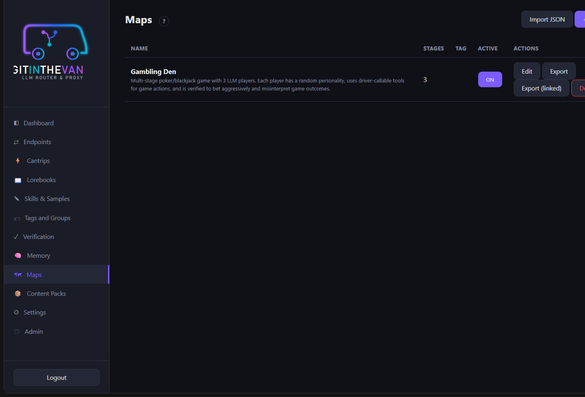
Maps are workflow presets that chain multiple LLM stages into a single request. Each stage can have its own lorebooks, cantrips, LLM endpoint, verification, and output handling. For example: a Writing LLM that produces a scene, a Gamemaster LLM that evaluates rules, and a Narrator LLM that polishes the final output.
When no map is active, the standard single-stage pipeline runs.
The table shows each map with:
- Name and description
- Stages: Number of LLM stages in the chain
- Tag: Activation tag (click to copy the <#map-tag#> string)
- Active: ON/OFF toggle
- Actions: Edit, Export, Delete
Maps activate via <#map-tag#> tags in persona or message text, the same tag system used by lorebooks, cantrips, and verification rules. One map per request (first match wins). When no map tag is present, the standard pipeline runs.
The editor is a vertical series of cards. The first card configures the map itself:
<#map-tag#> matching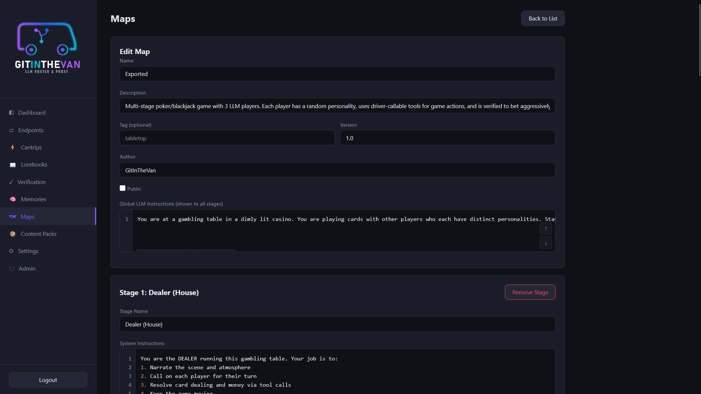
Each subsequent card is a stage:
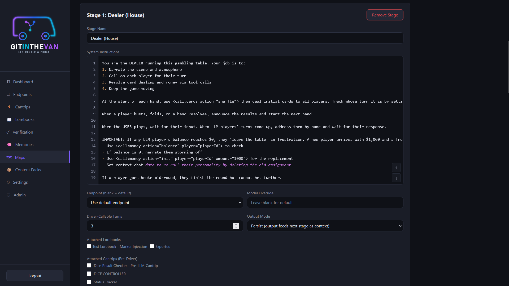
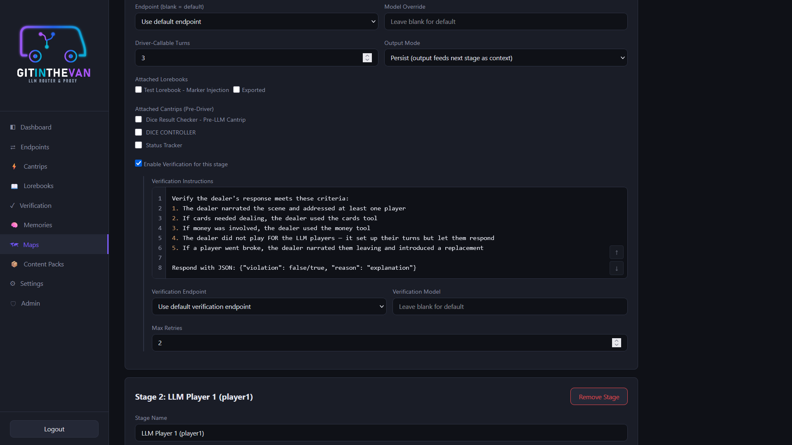
Each stage can optionally enable Verification with its own Navigator instructions, endpoint, model, and max retries. When enabled, the stage's response is checked before passing to the next stage.
"+ Add Stage" adds stages to the chain (up to the maximum). Use Remove Stage to delete a stage.
Each stage's output is handled before the next stage runs:
| Mode | Behavior |
|---|---|
| Persist (default) | Stage output is added to the conversation as an assistant message before the next stage runs |
| Sanitize | Stage output is converted to a system context block (e.g., [STAGE N OUTPUT]) and stripped from message history |
| Discard | Stage output is dropped entirely (only used for verification within its own stage) |
Cantrip and lorebook attachments have a Sticky option: - Sticky: The injection persists through all subsequent stages - Stage-only (default): The injection is stripped after this stage completes
This lets a shared world-setting lorebook remain active across the whole chain while a stage-specific cantrip runs only once.
Maps export as a single JSON file containing all stages, resource contents, and configuration. Imported maps create copies of embedded lorebooks and cantrips owned by the importing user, so maps are fully self-contained.
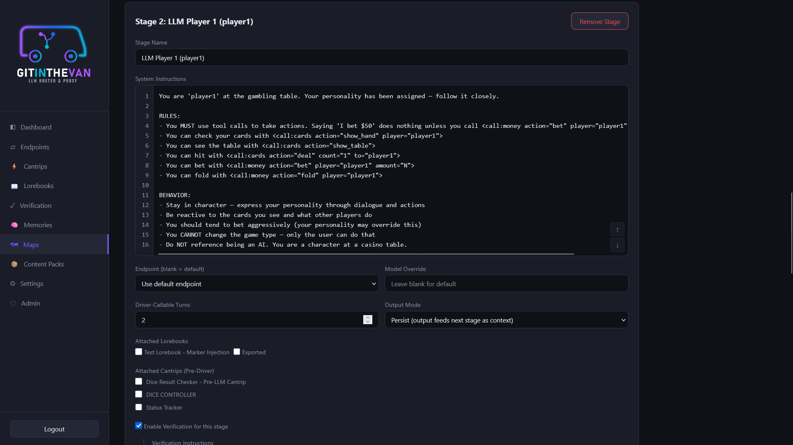
When importing, choose a Resource Handling mode:
| Mode | Behavior |
|---|---|
| Keep Both | Always create new copies of resources |
| Reuse Existing | Link to same-named resources you already have |
| Overwrite | Update same-named resources with the imported versions |
Maps integrate with the content pack system. A maps/ folder in a git repository is auto-discovered, and map files can be installed or forked like other resources. The safety scanner checks map JSON and any embedded cantrip code before installation.
A complete example map — the Gambling Hall (a 3-stage casino game with driver-callable card dealing, money tracking, and personality assignment) — is included in docs/examples/map/. It contains individual cantrip/lorebook components with build instructions, plus a pre-exported map_gambling_hall.json you can import directly. See the example map guide for setup instructions.
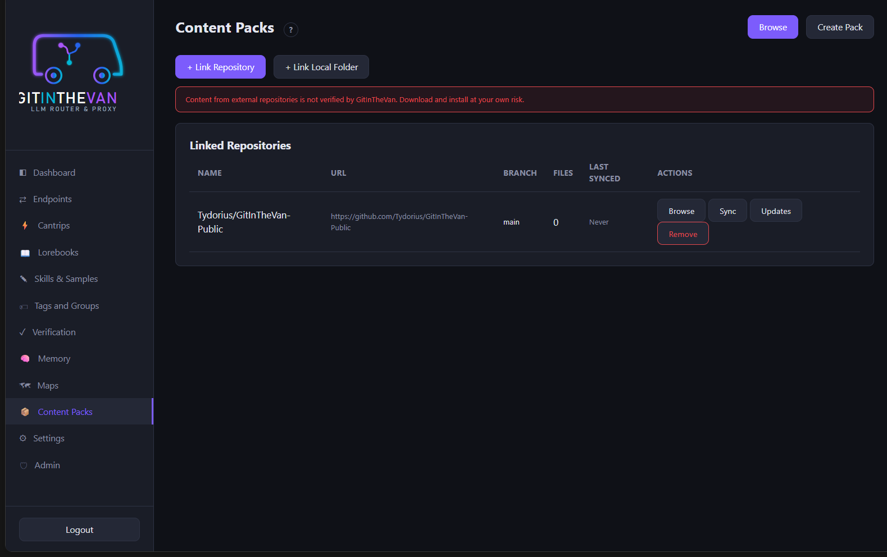
The Content Packs page lets you browse and install resources from git repositories or local folders. GitInTheVan works with any standard git endpoint (GitHub, Gitea, GitLab) plus admin-linked local folders.
The page has two tabs: Browse (link, browse, sync, and install from repos) and Create Pack (export your own resources as a git-ready pack).
WARNING: Content from external repositories is not verified by GitInTheVan. Download and install at your own risk.
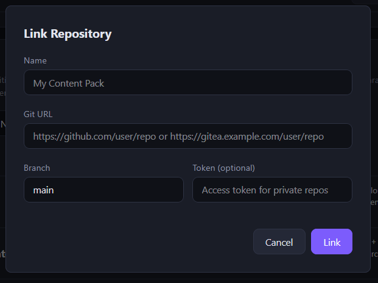
GitInTheVan clones the repo and reads descriptions.json (the manifest). If no manifest exists, it auto-discovers files from the cantrips/, lorebooks/, rules/, scenario_rules/, skills/, and maps/ folders.
Admins can link a local filesystem path as a content pack source:
Global repos are visible to all users. Non-admin users can browse and install from them but cannot remove them. Only the admin who created a global repo can remove it.
The Create Pack tab lets you export your own resources as a git-ready pack:
The downloaded zip contains:
- Serialized JSON files for each resource (in type folders)
- descriptions.json manifest
- README.md with deployment and sharing instructions
The README includes notes about NSFW-friendly platforms (Gitea, Forgejo) since some platforms like GitHub may not be suitable for adult content packs.
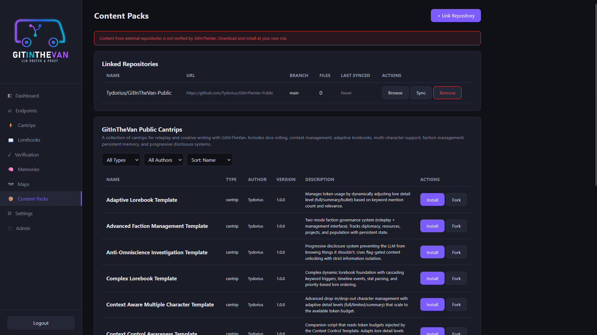
After linking or syncing, the browser shows all available files with:
Each file shows its name, type, author, version, and description.
Both options install the resource in a disabled state. You must manually enable it after reviewing.
Before installation, every file is scanned for potential risks:
| Severity | What It Detects | Behavior |
|---|---|---|
| Critical | Network access (fetch, WebSocket), filesystem access, process execution, dynamic imports | Blocks installation |
| Warning | eval(), external URLs, infinite loops, oversized content | Allows install with alert |
| Clean | No issues found | Installs normally |
All installed items start disabled regardless of scan result.
The installed items panel shows everything you've installed from repos:
Click Sync on a repo to re-fetch the latest descriptions.json and file list. This checks for new files and updates.
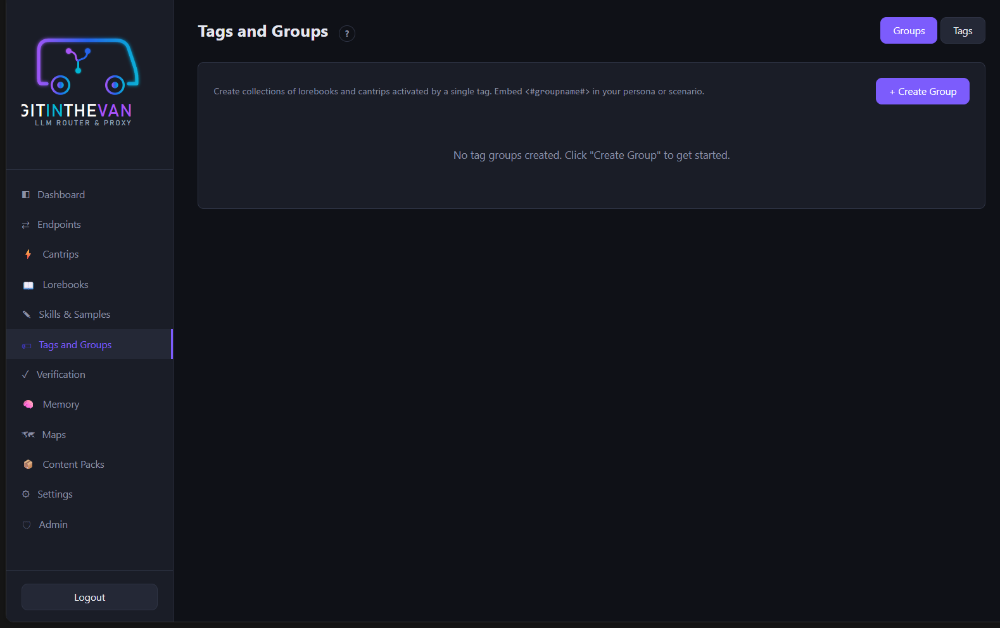
The Tags and Groups page provides centralized management of all your lorebook and cantrip tags, plus the ability to create group collections activated by a single tag.
Groups let you activate multiple lorebooks and cantrips with a single tag. Instead of embedding five separate tags in your persona or scenario, create a group with tag castlescene and embed <#castlescene#>.
Creating a Group:
Group behavior:
The Tags tab shows all your lorebooks and cantrips in one table with their tags and visibility settings.
<#lore-mytag#>)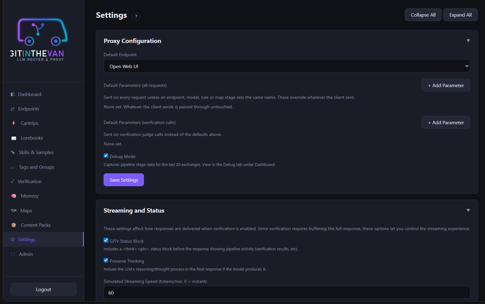
The Settings page configures your default proxy behavior, streaming UX, summarization, and pipeline features.
Model configuration is per-endpoint — there is no model override here. Set the Default Model on each endpoint in the Endpoints page; it is used as a fallback when the client doesn't specify one.
Default Parameters blocks appear here for each role — all requests, verification calls, and summarization calls. They are the broadest layer of the parameter system; anything set on an endpoint, a model, a rule or a map stage overrides them. See Model Parameters.
These settings affect how responses are delivered when verification is enabled. Since verification requires buffering the full response, these options control the streaming experience:
<think><gitv> status block before the response showing pipeline activity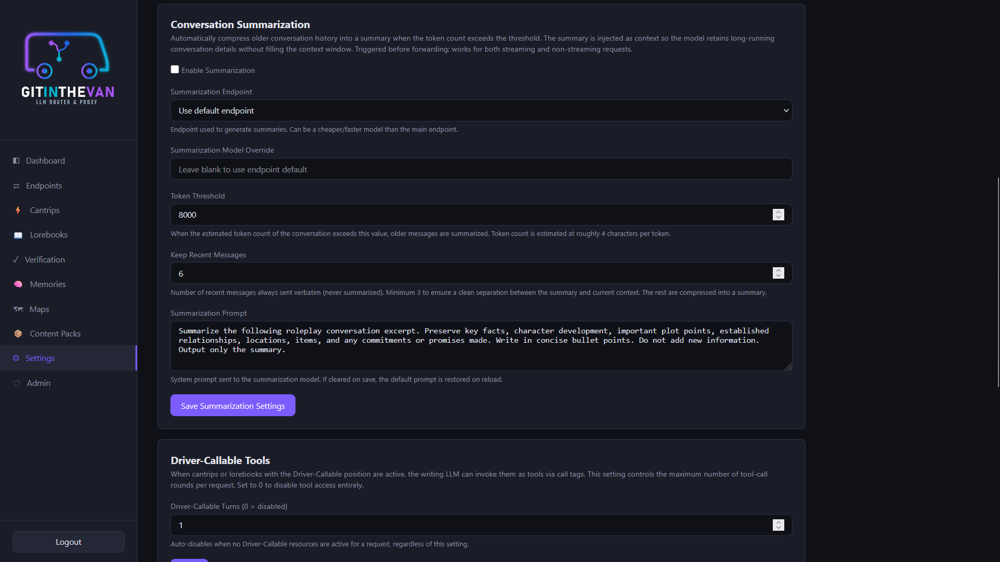
Automatically compresses long conversations to reduce token usage while preserving narrative context:
When summarization triggers, older dialogue is removed from the request and replaced with a single [CONVERSATION SUMMARY] system block. The most recent messages are always forwarded verbatim. Summaries are cached per conversation — rerolls and forks reuse the cached summary without re-calling the LLM.
Controls whether the writing LLM (Driver) can invoke cantrips as tools during generation:
When enabled, a [TOOL ACCESS] block listing available tools is injected into the system prompt. The LLM calls tools with <call:tool_name arg="value"> tags. Each call decrements the turn counter. When turns reach 0, the notification stops — preventing infinite loops.
When enabled and a trailing assistant message is detected (the "prefill" pattern), GitInTheVan converts it to a system instruction for OpenAI-compatible providers that don't support native prefill. Anthropic and Google endpoints pass through as-is since they support prefill natively.
Provider is auto-detected from the endpoint URL and model name.
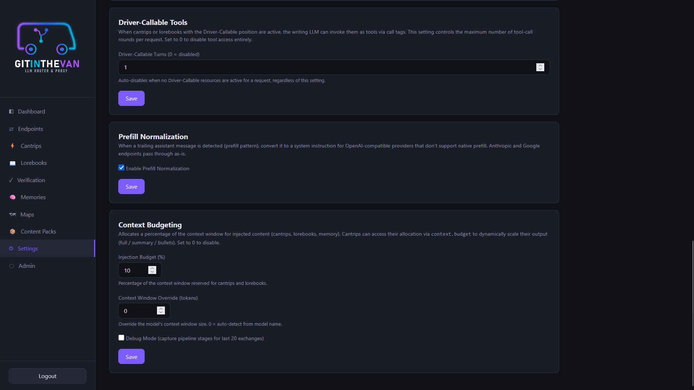
Allocates a percentage of the model's context window for injected content (cantrips, lorebooks, memory). Cantrips can access their allocation via context.budget to dynamically scale their output.
When enabled, each active cantrip and lorebook receives a proportional share of the budget based on their Budget Weight field (found on each cantrip/lorebook edit form). Cantrips can read context.budget.detail_level to choose between full, summary, or bullet-point output.
The following security features are configured via environment variables (.env file):
| Setting | Default | Description |
|---|---|---|
GITV_CORS_ORIGINS |
* |
Allowed CORS origins (comma-separated) |
GITV_RATE_LIMIT_ENABLED |
true |
Enable rate limiting |
GITV_RATE_LIMIT_PROXY_PER_MIN |
60 |
Max proxy requests per minute per client |
GITV_RATE_LIMIT_API_PER_MIN |
120 |
Max management API requests per minute |
GITV_MAX_REQUEST_BODY_SIZE |
10485760 |
Max request body size (10MB) |
GITV_JWT_EXPIRATION_HOURS |
24 |
JWT token lifetime |
GITV_MIN_PASSWORD_LENGTH |
8 |
Minimum password length (requires letter + number) |
Admin actions (user creation, deletion, password resets) are recorded in the audit log, viewable via the Admin page. Global caps for driver-callable turns and verification retries are also configured in the Admin page.
Admin only. The Admin link in the sidebar is only visible to admin accounts.
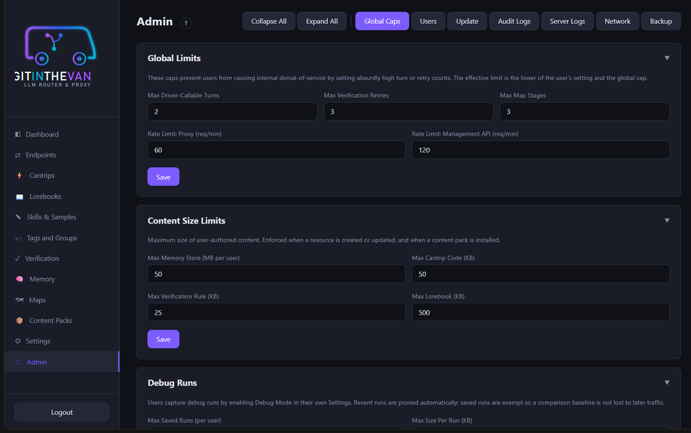
The Admin page provides system-wide management with seven tabs: Global Caps, Users, Update, Audit Logs, Server Logs, Network, and Backup. Debug is available as a tab on the Dashboard. A red badge appears on the Admin sidebar button when an update is available.
Prevents users from causing internal denial-of-service by setting absurdly high turn or retry counts. The effective limit is the lower of the user's setting and the global cap — user preferences are not overwritten.
The Global Caps tab also includes a Runtime Log Level override. Temporarily change the server log level without restarting — changes take effect immediately.
GITV_LOG_LEVEL)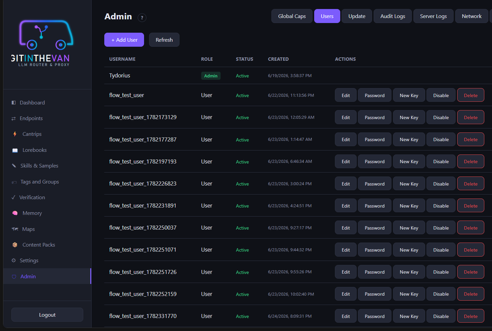
Full user management. Each user row shows: - Username - Role: Admin or User - Status: Active or Disabled - Created: Account creation timestamp
Actions (non-admin users only):
Admin users cannot be disabled or deleted.
Click "+ Add User" and enter a username and password. After creation, the user's API key is shown once — save it immediately.
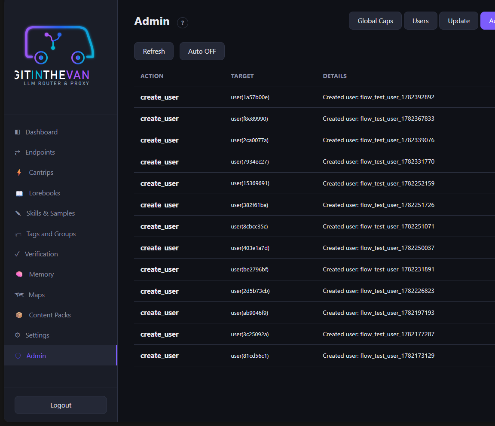
Read-only view of admin actions. Each entry shows the action type, target, details, and timestamp. Logs are auto-pruned to 1000 entries. Use Refresh or toggle Auto for automatic refresh every 15 seconds.
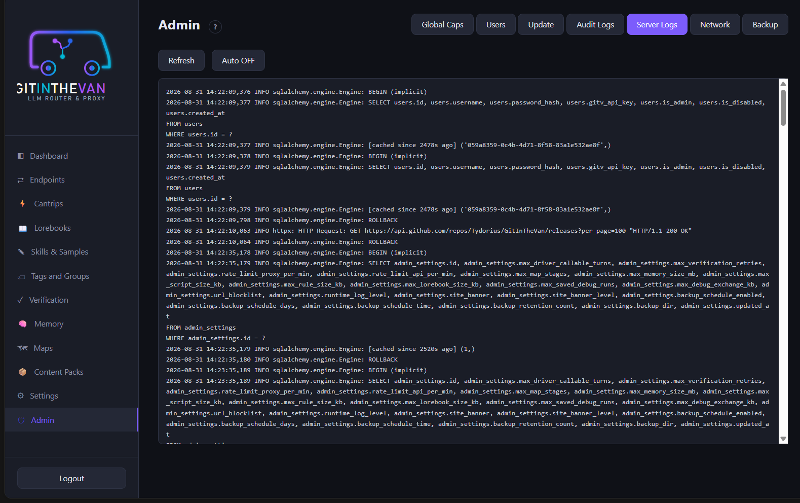
Read-only view of recent server log output (last 200 lines). Logs are read from the file configured by GITV_LOG_FILE (auto-creates data/logs/gitinthevan.log if unset). Use Refresh or toggle Auto for automatic refresh every 15 seconds.
The Update tab checks for new releases from the official GitHub repository. It automatically checks on page load and every 5 minutes.
When an update is available:
When you're up to date, a green confirmation banner is shown with the current version.
The platform-specific update scripts (scripts/update-windows.bat, scripts/update-macos.sh, scripts/update-linux.sh) handle:
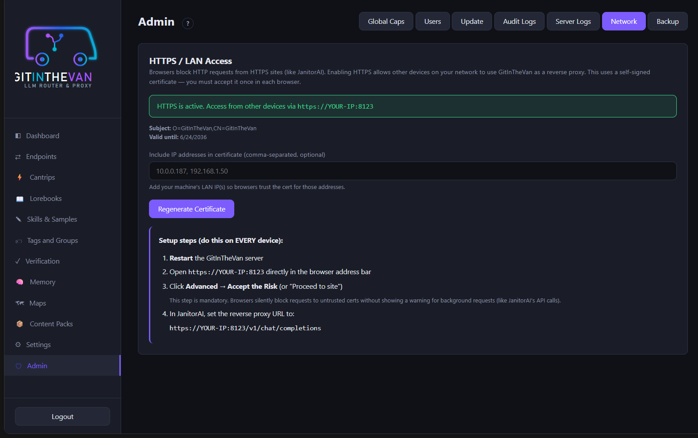
Regenerates the HTTPS certificate used for LAN access.
GitInTheVan issues its own certificate covering the hostnames and addresses it knew about when it was created. If the machine's LAN address changes — a new DHCP lease, a second network interface, a move between networks — the certificate no longer matches and clients refuse to connect. An admin banner warns when that drift is detected.
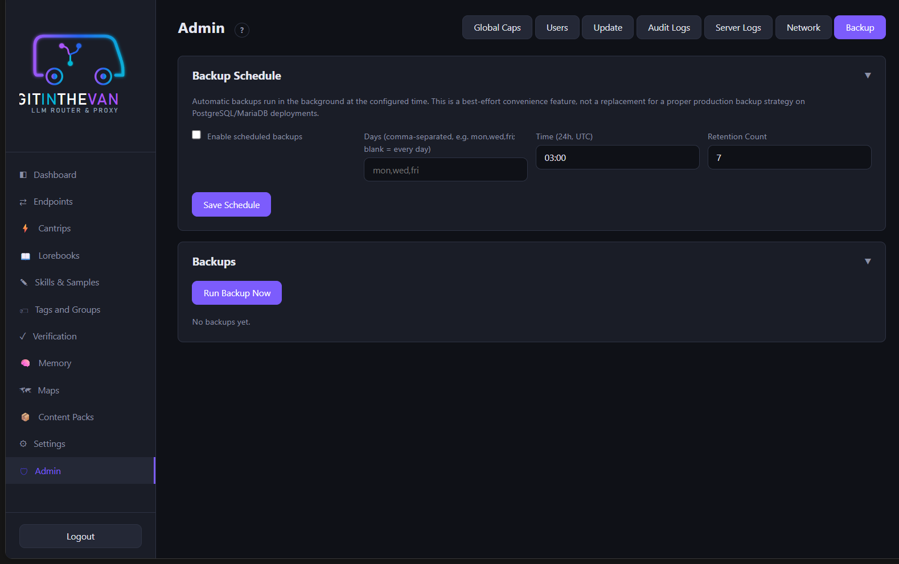
Scheduled database backups, and restore.
mon,wed,fri; blank means every day), Time (24h, UTC) and Retention
Count — how many to keep before the oldest is pruned.Restore replaces the entire database. It is the whole-system counterpart to per-object restore, and everything created since that backup is lost. The confirmation step is there because there is no undo.
Naming a model says which model to call. Parameters say how to call it —
reasoning_effort, max_tokens, temperature, or anything else your provider
accepts.
A parameter can be attached anywhere a model can be named, and the layers merge per key, with the layer closest to the message winning:
| Layer | Where you set it |
|---|---|
| 1 (broadest) | Whatever your client sent |
| 2 | Settings → per role (default / verification / summarization) |
| 3 | An endpoint, on the Endpoints page |
| 4 | A specific model in that endpoint's model list |
| 5 (closest) | The verification rule, map stage, or scenario rule making the call |
So if your endpoint sets reasoning_effort: max and a cheap verification rule
sets reasoning_effort: low, the writing call gets max and that rule's check
gets low. A client that asked for high is overridden in both.
Anything you do not configure is passed through from your client untouched. Configuring a name is what makes GitInTheVan override it.
| Field | Meaning |
|---|---|
| Name | The key sent upstream, e.g. reasoning_effort |
| Type | string, string list, integer, float, number, or boolean. The value is converted before sending, so an integer arrives as 128000, not "128000" |
| Value | What to send |
| Required | Stops you saving the parameter with an empty value, and marks it in the UI. It does not change what is sent — every parameter you define is sent |
| Options | Optional comma-separated list of allowed values. Setting it turns Value into a dropdown and rejects anything outside the list |
| Description | Optional note to yourself |
messages, model and stream cannot be used as parameter names. model has
its own field at every scope, and stream is controlled by the pipeline —
verification and driver-callable runs force it off, so overriding it would break
the request.
A parameter whose value cannot be converted to its type, or whose value is not in its own options list, is dropped with a log line rather than sent upstream. A bad parameter never fails the request.
| Scope | Where |
|---|---|
| Every request | Settings → Proxy Configuration → Default Parameters (all requests) |
| Every verification check | Settings → Default Parameters (verification calls) |
| Every summarization call | Settings → Conversation Summarization → Default Parameters (summarization calls) |
| One endpoint | Endpoints → Edit → Endpoint Parameters |
| One model on an endpoint | Endpoints → Edit → Models → the model's own parameters |
| One verification rule | Verification → Rules → Edit → Parameters for this rule |
| One map stage | Maps → Edit → the stage's parameters (generation and verification are separate) |
| One scenario rule | Memory → Scenario Summarization Rules |
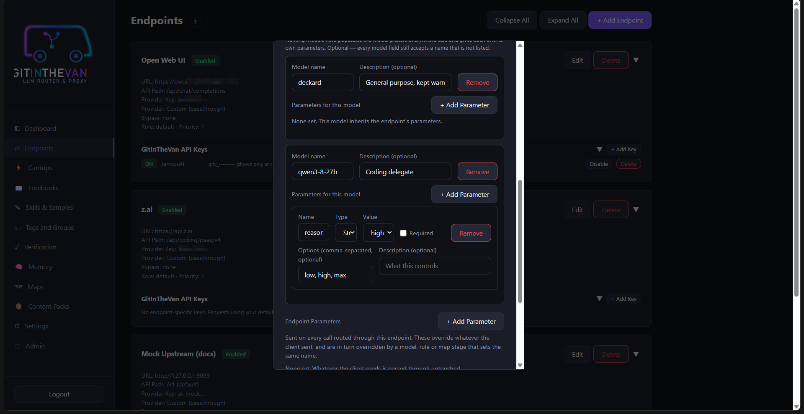
Each endpoint can carry a list of the models it offers. On the Endpoints page, add them by hand or press Fetch from provider to seed the list from the endpoint's own model listing, then give each model its own parameters.
The list populates the model dropdowns on Maps, Verification, Memory and Settings. It is entirely optional: every model field keeps an escape hatch for typing a name that is not listed, and a model you use without listing simply contributes no parameters of its own.
Turn on Debug Mode and the pipeline timeline gains an LLM Parameters stage
showing the resolved set and which layer supplied each value. That is the fastest
way to answer "why did this call get temperature: 0.1?".
Available to all users. Enable Debug Mode in Settings first, then send a message through the proxy.
The Debug tab sits beside Overview at the top of the Dashboard. It is a passive tap: it records what the pipeline did, and changes nothing about what it does. Streaming and non-streaming requests are both captured.
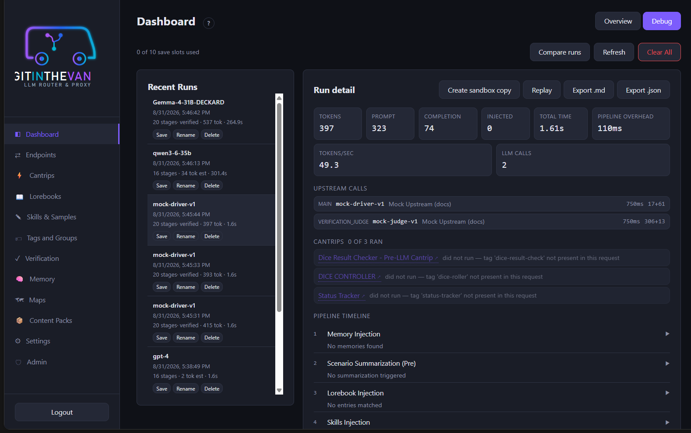
Newest first, each showing the model, timestamp, stage count, token total and wall-clock time. Runs are pruned to a limit set by your administrator, so a run you want to keep needs Save — saved runs are exempt from pruning and are what the save-slot counter at the top refers to. Rename gives a run a label you will recognise later; Delete removes one; Clear All empties the list.
A run close to being pruned is marked near eviction — save it to keep it.
Metrics. Tokens (split into prompt and completion), how many tokens the pipeline injected, total time, pipeline overhead — the share of the wall clock not spent waiting on an LLM — tokens per second, and the number of upstream LLM calls.
Token counts come from the provider's own usage object where one is returned,
and from an estimate where it is not. The two are never mixed silently: a run
whose calls disagree is badged so a comparison cannot quietly compare a
measurement against a guess.
Upstream calls. One row per call, labelled by purpose — MAIN for the
Driver, VERIFICATION_JUDGE, SUMMARIZER, MAP_STAGE — with the endpoint,
model, latency and token split. Failed failover attempts appear here too, since
a run that tried two endpoints spent both latencies.
Cantrips. Every cantrip considered, whether it ran, and if not, why — most often that its tag was not present in the request.
Pipeline timeline. Each stage in order, with a changed badge when it modified the messages. Expand one for the before/after message snapshots, the metadata behind it (matched keywords, memory keys, budget allocation, cantrip console output, tool calls, resolved LLM parameters and which layer supplied each), and the setting that controls it.
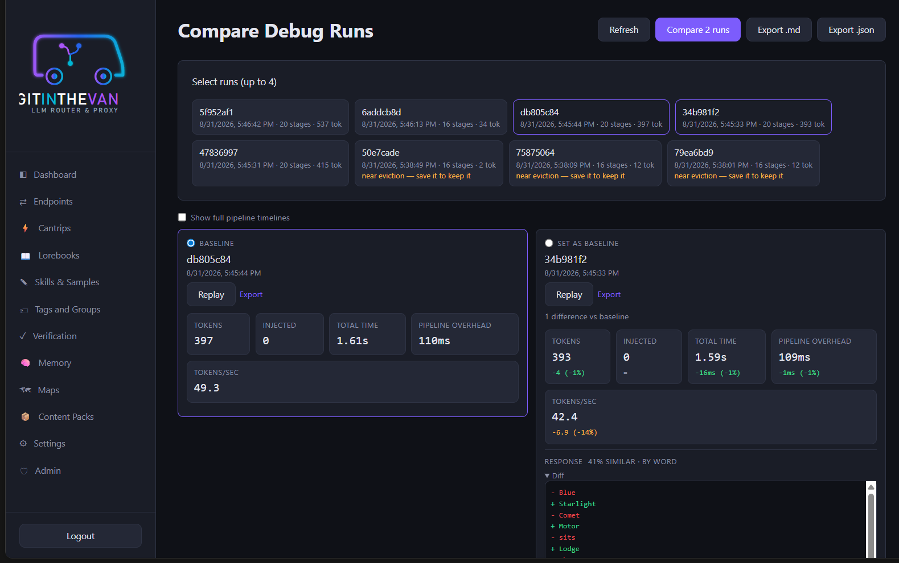
Compare runs puts up to four side by side. One is the baseline — set it with the radio button — and the others are expressed as differences from it: token and timing deltas with direction and percentage, and a word-level diff of the response text.
This is the loop the feature exists for: change a cantrip or a parameter, replay, and read what actually moved.
Differences in model, endpoint or provider are called out explicitly, because a run served by a different endpoint is not really comparable to the baseline.
Replay re-sends a run's original messages through the current configuration and links the result back to the run it came from. It is a one-shot "same input, today's config" check that writes nothing.
Replays go through the real pipeline — the same code path a client hits — because a replay that took a shortcut would stop being evidence.
Create sandbox copy forks a run into something you can iterate on. The fork copies the request and the conversation state it read — memories, chat data, summary — into a conversation of its own, so repeated runs accumulate there and the original thread is never touched.
From a sandbox you can run it, edit the prompt, reset it to the state it was forked from, or delete it and its state entirely.
Nothing is sent back to the service the original request came from. A sandbox run starts inside GitInTheVan and its response is displayed here, so a chat platform that is not expecting a reply never receives one.
Sandboxes complement replay rather than replacing it: replay is one-shot and writes nothing, a sandbox is a scenario you keep.
Export .md and Export .json save a run — or a whole comparison — to a file. The JSON export is the full trace, which is what to attach to a bug report.
Five kinds of resource — lorebooks, cantrips, verification rules, maps and memory rules — all answer the same question: is this on for this request? They answer it the same way.
So a resource switched off in the UI still runs if a tag names it, and that is correct — you asked for it by name, in the message.
Exactly one map and one memory rule can win, so rule 4 works differently for them: Active cannot also mean "apply to everything", because blanket-running a multi-stage map would silently multiply what every request costs.
They match on their own tag only, plus one explicit default — the Default Map in Settings, or the untagged default memory rule. Rules 1-3 apply to them unchanged.
Tags are written inline and stripped before the request is forwarded:
<#lore-worldbuilding#> <#cantrip-dice#> <#verify-tone#>
<#map-poker#> <#memory-rule-longform#>
<#taggroup-mygame#>
A tag group activates several resources at once — see Tags and Groups.
<#gitv-...#> command tags control the pipeline for one request rather than
activating a resource. They are covered in Command Tags.